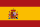
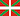
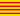

Esperando conexión...
📂
💾
❌
Distancia desde:
+
↺
×
0
Finalizar edición de despegues favoritos
×
Ajustes



Idioma / Hizkuntza / Llengua / Language / Langue / Sprache
Español
Euskara
Català
Galego
English
Français
Deutsch
Português
Editar favoritos
📂
💾
🔄
Límites de Viento y Racha
Viento
Racha máxima
Datos meteorológicos opcionales
Probabilidad de Precipitación
Viento a 80, 120 y 180 m
Cizalladura / Fiabilidad
XC: Techo MSL, CAPE y CIN
Otras opciones
🕜
Horario de vuelo preferido
Solo horas diurnas
Ordenar por Condiciones XC
Actualizaciones modelos meteo
Guía
|
Ayuda
|
Legal
|
Seleccionar origen
×
Volver a Editar favoritos
⏳ Cargando mapa de calor Península Ibérica...
(309.157 despegues registrados)
⏳ Cargando mapa de calor Alpes...
(967.477 despegues registrados)
⏳ Cargando mapa de calor Marruecos...
(11.006 despegues registrados)
Meteo
Capas y filtros
❌
📌
Ayuda
Capas:
🪂 Despegues
🔥 Mapa de calor Península Ibérica
🔥 Mapa de calor Alpes
🔥 Mapa de calor Marruecos
✏️ Notas
🪂 Despegues de Paraglidingearth
Orientación:
NO
N
NE
O
E
SO
S
SE
Mínimo de vuelos registrados =
0
Año del último vuelo >=
Todos
Ajustes
Mínimo de vuelos registrados:
0
Año del último vuelo >=
Todos
Ayuda
Inicio
Buscar
Distancia
Mapa
Ajustes